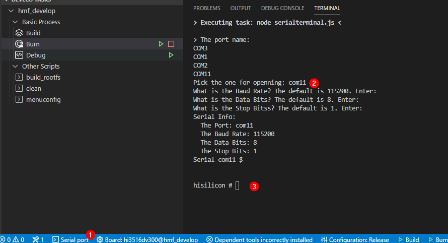
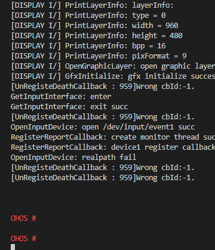

Developing the First Driver Running on Hi3516¶
This section describes how to develop a driver on the board, including introduction, compilation, burning, and running of the driver.
Acquiring Source Code¶
Acquire the source code by referring to Acquiring Source Code.
Introduction to Driver¶
The following operations take a HDF-based UART driver as an example to show how to add configuration files, code the driver, and compile the code for interactions between the user-space applications and the driver. The driver source code is stored in the vendor/huawei/hdf/sample directory.
Add Configurations.
Add driver configurations to the HDF driver configuration file (for example, vendor/hisi/hi35xx/hi3516dv300/config/uart/uart_config.hcs).
root { platform { uart_sample { num = 5; // UART device number base = 0x120a0000; // Base address of the UART register irqNum = 38; baudrate = 115200; uartClk = 24000000; wlen = 0x60; parity = 0; stopBit = 0; match_attr = "sample_uart_5"; } } }
Add the device node information to the HDF device configuration file (for example, vendor/hisi/hi35xx/hi3516dv300/config/device_info/device_info.hcs)
root { device_info { platform :: host { hostName = "platform_host"; priority = 50; device_uart :: device { device5 :: deviceNode { policy = 2; priority = 10; permission = 0660; moduleName = "UART_SAMPLE"; serviceName = "HDF_PLATFORM_UART_5"; deviceMatchAttr = "sample_uart_5"; } } } } }
 NOTE: The configuration files are in the same path as
the source code of the UART driver. You need to manually add the
files to the path of the Hi3516DV300 board.
NOTE: The configuration files are in the same path as
the source code of the UART driver. You need to manually add the
files to the path of the Hi3516DV300 board.Register a UART driver entry.
Register the HdfDriverEntry of the UART driver with the HDF.
// Bind the UART driver interface to the HDF. static int32_t SampleUartDriverBind(struct HdfDeviceObject *device) { struct UartHost *uartHost = NULL; if (device == NULL) { return HDF_ERR_INVALID_OBJECT; } HDF_LOGI("Enter %s:", __func__); uartHost = UartHostCreate(device); if (uartHost == NULL) { HDF_LOGE("%s: UartHostCreate failed", __func__); return HDF_FAILURE; } uartHost->service.Dispatch = SampleDispatch; return HDF_SUCCESS; } // Obtain configuration information from the HCS of the UART driver. static uint32_t GetUartDeviceResource( struct UartDevice *device, const struct DeviceResourceNode *resourceNode) { struct UartResource *resource = &device->resource; struct DeviceResourceIface *dri = NULL; dri = DeviceResourceGetIfaceInstance(HDF_CONFIG_SOURCE); if (dri == NULL || dri->GetUint32 == NULL) { HDF_LOGE("DeviceResourceIface is invalid"); return HDF_FAILURE; } if (dri->GetUint32(resourceNode, "num", &resource->num, 0) != HDF_SUCCESS) { HDF_LOGE("uart config read num fail"); return HDF_FAILURE; } if (dri->GetUint32(resourceNode, "base", &resource->base, 0) != HDF_SUCCESS) { HDF_LOGE("uart config read base fail"); return HDF_FAILURE; } resource->physBase = (unsigned long)OsalIoRemap(resource->base, 0x48); if (resource->physBase == 0) { HDF_LOGE("uart config fail to remap physBase"); return HDF_FAILURE; } if (dri->GetUint32(resourceNode, "irqNum", &resource->irqNum, 0) != HDF_SUCCESS) { HDF_LOGE("uart config read irqNum fail"); return HDF_FAILURE; } if (dri->GetUint32(resourceNode, "baudrate", &resource->baudrate, 0) != HDF_SUCCESS) { HDF_LOGE("uart config read baudrate fail"); return HDF_FAILURE; } if (dri->GetUint32(resourceNode, "wlen", &resource->wlen, 0) != HDF_SUCCESS) { HDF_LOGE("uart config read wlen fail"); return HDF_FAILURE; } if (dri->GetUint32(resourceNode, "parity", &resource->parity, 0) != HDF_SUCCESS) { HDF_LOGE("uart config read parity fail"); return HDF_FAILURE; } if (dri->GetUint32(resourceNode, "stopBit", &resource->stopBit, 0) != HDF_SUCCESS) { HDF_LOGE("uart config read stopBit fail"); return HDF_FAILURE; } if (dri->GetUint32(resourceNode, "uartClk", &resource->uartClk, 0) != HDF_SUCCESS) { HDF_LOGE("uart config read uartClk fail"); return HDF_FAILURE; } return HDF_SUCCESS; } // Attach the configuration and interface of the UART driver to the HDF. static int32_t AttachUartDevice(struct UartHost *host, struct HdfDeviceObject *device) { int32_t ret; struct UartDevice *uartDevice = NULL; if (device->property == NULL) { HDF_LOGE("%s: property is NULL", __func__); return HDF_FAILURE; } uartDevice = (struct UartDevice *)OsalMemCalloc(sizeof(struct UartDevice)); if (uartDevice == NULL) { HDF_LOGE("%s: OsalMemCalloc uartDevice error", __func__); return HDF_ERR_MALLOC_FAIL; } ret = GetUartDeviceResource(uartDevice, device->property); if (ret != HDF_SUCCESS) { (void)OsalMemFree(uartDevice); return HDF_FAILURE; } host->num = uartDevice->resource.num; host->priv = uartDevice; AddUartDevice(host); return InitUartDevice(uartDevice); } // Initialize the UART driver. static int32_t SampleUartDriverInit(struct HdfDeviceObject *device) { int32_t ret; struct UartHost *host = NULL; if (device == NULL) { HDF_LOGE("%s: device is NULL", __func__); return HDF_ERR_INVALID_OBJECT; } HDF_LOGI("Enter %s:", __func__); host = UartHostFromDevice(device); if (host == NULL) { HDF_LOGE("%s: host is NULL", __func__); return HDF_FAILURE; } ret = AttachUartDevice(host, device); if (ret != HDF_SUCCESS) { HDF_LOGE("%s: attach error", __func__); return HDF_FAILURE; } host->method = &g_sampleUartHostMethod; return ret; } static void DeinitUartDevice(struct UartDevice *device) { struct UartRegisterMap *regMap = (struct UartRegisterMap *)device->resource.physBase; /* Wait for the UART to enter the idle state. */ while (UartPl011IsBusy(regMap)); UartPl011ResetRegisters(regMap); uart_clk_cfg(0, false); OsalIoUnmap((void *)device->resource.physBase); device->state = UART_DEVICE_UNINITIALIZED; } // Detach and release the UART driver. static void DetachUartDevice(struct UartHost *host) { struct UartDevice *uartDevice = NULL; if (host->priv == NULL) { HDF_LOGE("%s: invalid parameter", __func__); return; } uartDevice = host->priv; DeinitUartDevice(uartDevice); (void)OsalMemFree(uartDevice); host->priv = NULL; } // Release the UART driver. static void SampleUartDriverRelease(struct HdfDeviceObject *device) { struct UartHost *host = NULL; HDF_LOGI("Enter %s:", __func__); if (device == NULL) { HDF_LOGE("%s: device is NULL", __func__); return; } host = UartHostFromDevice(device); if (host == NULL) { HDF_LOGE("%s: host is NULL", __func__); return; } if (host->priv != NULL) { DetachUartDevice(host); } UartHostDestroy(host); } struct HdfDriverEntry g_sampleUartDriverEntry = { .moduleVersion = 1, .moduleName = "UART_SAMPLE", .Bind = SampleUartDriverBind, .Init = SampleUartDriverInit, .Release = SampleUartDriverRelease, }; HDF_INIT(g_sampleUartDriverEntry);
Register a UART driver interface.
Implement the UART driver interface using the template UartHostMethod provided by the HDF.
static int32_t SampleUartHostInit(struct UartHost *host) { HDF_LOGI("%s: Enter", __func__); if (host == NULL) { HDF_LOGE("%s: invalid parameter", __func__); return HDF_ERR_INVALID_PARAM; } return HDF_SUCCESS; } static int32_t SampleUartHostDeinit(struct UartHost *host) { HDF_LOGI("%s: Enter", __func__); if (host == NULL) { HDF_LOGE("%s: invalid parameter", __func__); return HDF_ERR_INVALID_PARAM; } return HDF_SUCCESS; } // Write data into the UART device. static int32_t SampleUartHostWrite(struct UartHost *host, uint8_t *data, uint32_t size) { HDF_LOGI("%s: Enter", __func__); uint32_t idx; struct UartRegisterMap *regMap = NULL; struct UartDevice *device = NULL; if (host == NULL || data == NULL || size == 0) { HDF_LOGE("%s: invalid parameter", __func__); return HDF_ERR_INVALID_PARAM; } device = (struct UartDevice *)host->priv; if (device == NULL) { HDF_LOGE("%s: device is NULL", __func__); return HDF_ERR_INVALID_PARAM; } regMap = (struct UartRegisterMap *)device->resource.physBase; for (idx = 0; idx < size; idx++) { UartPl011Write(regMap, data[idx]); } return HDF_SUCCESS; } // Set the baud rate of the UART device. static int32_t SampleUartHostSetBaud(struct UartHost *host, uint32_t baudRate) { HDF_LOGI("%s: Enter", __func__); struct UartDevice *device = NULL; struct UartRegisterMap *regMap = NULL; UartPl011Error err; if (host == NULL) { HDF_LOGE("%s: invalid parameter", __func__); return HDF_ERR_INVALID_PARAM; } device = (struct UartDevice *)host->priv; if (device == NULL) { HDF_LOGE("%s: device is NULL", __func__); return HDF_ERR_INVALID_PARAM; } regMap = (struct UartRegisterMap *)device->resource.physBase; if (device->state != UART_DEVICE_INITIALIZED) { return UART_PL011_ERR_NOT_INIT; } if (baudRate == 0) { return UART_PL011_ERR_INVALID_BAUD; } err = UartPl011SetBaudrate(regMap, device->uartClk, baudRate); if (err == UART_PL011_ERR_NONE) { device->baudrate = baudRate; } return err; } // Obtain the baud rate of the UART device. static int32_t SampleUartHostGetBaud(struct UartHost *host, uint32_t *baudRate) { HDF_LOGI("%s: Enter", __func__); struct UartDevice *device = NULL; if (host == NULL) { HDF_LOGE("%s: invalid parameter", __func__); return HDF_ERR_INVALID_PARAM; } device = (struct UartDevice *)host->priv; if (device == NULL) { HDF_LOGE("%s: device is NULL", __func__); return HDF_ERR_INVALID_PARAM; } *baudRate = device->baudrate; return HDF_SUCCESS; } // Bind the UART device using HdfUartSampleInit. struct UartHostMethod g_sampleUartHostMethod = { .Init = SampleUartHostInit, .Deinit = SampleUartHostDeinit, .Read = NULL, .Write = SampleUartHostWrite, .SetBaud = SampleUartHostSetBaud, .GetBaud = SampleUartHostGetBaud, .SetAttribute = NULL, .GetAttribute = NULL, .SetTransMode = NULL, };
Add the sample module of the UART driver to the compilation script vendor/huawei/hdf/hdf_vendor.mk.
LITEOS_BASELIB += -lhdf_uart_sample LIB_SUBDIRS += $(VENDOR_HDF_DRIVERS_ROOT)/sample/platform/uart
Implement the code for interaction between the user-space applications and driver.
Create the /dev/uartdev-5 node after the UART driver is initialized successfully. The following example shows how to interact with the UART driver through the node.
#include <stdlib.h> #include <unistd.h> #include <fcntl.h> #include "hdf_log.h" #define HDF_LOG_TAG "hello_uart" #define INFO_SIZE 16 int main(void) { int ret; int fd; const char info[INFO_SIZE] = {" HELLO UART! "}; fd = open("/dev/uartdev-5", O_RDWR); if (fd < 0) { HDF_LOGE("hello_uart uartdev-5 open failed %d", fd); return -1; } ret = write(fd, info, INFO_SIZE); if (ret != 0) { HDF_LOGE("hello_uart write uartdev-5 ret is %d", ret); } ret = close(fd); if (ret != 0) { HDF_LOGE("hello_uart uartdev-5 close failed %d", fd); return -1; } return ret; }
Add the hello_uart_sample component to the hdf subsystem directory in the build/lite/product/ipcamera_hi3516dv300.json file.
{ "subsystem": [ { "name": "hdf", "component": [ { "name": "hdf_sample", "dir": "//vendor/huawei/hdf/sample/platform/uart:hello_uart_sample", "features":[] } ] } ] }
NOTE: Preceding code snippets are for reference only.
You can view the complete sample code in
vendor/huawei/hdf/sample. The sample code is not automatically
compiled by default. You can add it to the compilation script.
Compiling and Burning¶
Compile and burn images by referring to Compiling Code and Burning Images.
Running an Image¶
Connect to a serial port.
 NOTICE: If the sconnection fails, rectify the fault
by referring to problem 5 in the FAQs section.
NOTICE: If the sconnection fails, rectify the fault
by referring to problem 5 in the FAQs section.Figure 1 Serial port connection

Click Serial port to enable it.
Enter the serial port number “com11” and press Enter until hisillicon is displayed.
Go to step 2 if the board is started for the first time or the startup parameters need to be modified; go to step 3 otherwise.
(Mandatory when the board is started for the first time) Modify the bootcmd and bootargs parameters of U-boot. You need to perform this step only once if the parameters need not to be modified during the operation. The board automatically starts after it is reset.
NOTICE: The default waiting time in the U-boot is 2s.
You can press Enter to interrupt the waiting and run the
reset command to restart the system after “hisillicon” is
displayed.Table 1 Parameters of the U-boot
Command
Description
setenv bootcmd “mmc read 0x0 0x80000000 0x800 0x4800; go 0x80000000”;
Run this command to read content that has a size of 0x4800 (9 MB) and a start address of 0x800 (1 MB) to the memory address 0x80000000.
setenv bootargs “console=ttyAMA0,115200n8 root=emmc fstype=vfat rootaddr=10 M rootsize=15 M rw”;
Run this command to set the output mode to serial port output, baud rate to 115200, data bit to 8, rootfs to be mounted to the emmc component, and file system type to vfat.
rootaddr=10 M, rootsize=15 M rw indicates the start address and size of the rootfs.img file to be burnt, respectively. The file size must be the same as that of the compiled file in the IDE.
saveenv
saveenv means to save the current configuration.
reset
reset means to reset the board.
NOTICE: go 0x80000000 (optional) indicates that
the command is fixed in the startup parameters by default and the
board automatically starts after it is reset. If you want to
manually start the board, press Enter in the countdown phase
of the U-boot startup to interrupt the automatic startup.Run the reset command and press Enter to restart the board. After the board is restarted, OHOS is displayed when you press Enter.
Figure 2 System startup

In the root directory, run the ./bin/hello_uart command line to execute the demo program. The compilation result is shown in the following example.
OHOS # ./bin/hello_uart OHOS # HELLO UART!
Follow-up Learning¶
Congratulations! You have finished all steps! You are advised to go on learning how to develop Cameras with a Screen.